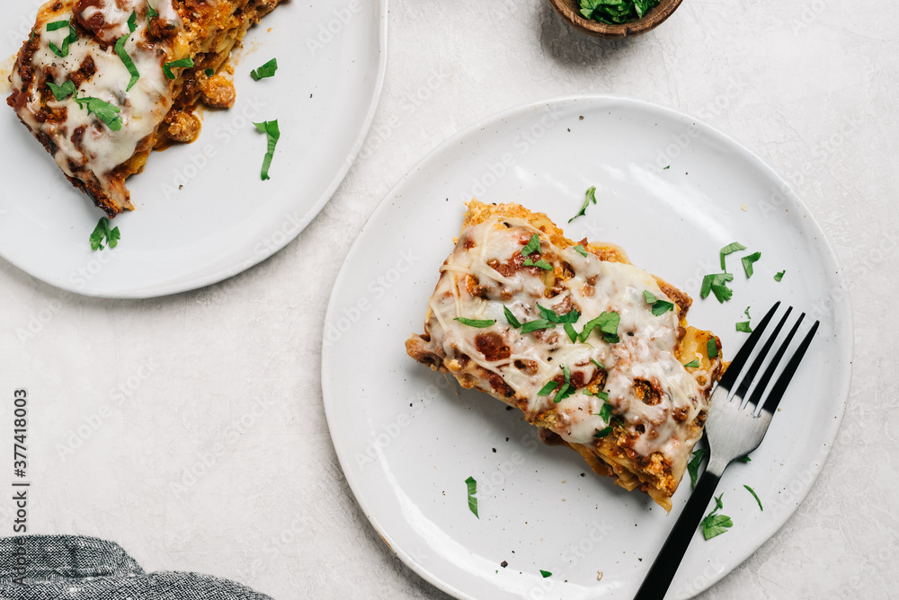

Inicio
Lasaña

Por Abraham Gómez
LASAÑA en HORNO ideal para una comida o cena sazonada con CONSOMATE®, un toque de JUGO MAGGI® y CROSSE & BLACKWELL®. Sorprende a tus invitados.
Ingredientes
- 10 Jitomates cortados en cuartos
- 3 Cucharadas de aceite de oliva
- 1/4 De pieza de cebolla cortada en trozos1/4
- 2 Dientes de Ajo
- 1 Cubo de Concentrado de Tomate con Pollo CONSOMATE®
- 1/2 Cucharadita de sal con cebolla en polvo
- 1 Taza de agua
- 1 1/2 Cucharadas de finas hierbas
- 1/4 De cucharadita de pimienta negra molida
- 2 Cucharadas de aceite vegetal
- 1 Cucharada de cebolla picada finamente
- 1 Cucharadita de ajo picado finamente
- 600 Gramos de carne molida de res
- 1 Cucharada de sal con cebolla en polvo
- 1 Cucharada de Jugo MAGGI®
- 3 Cucharadas de Salsa Tipo Inglesa CROSSE & BLACKWELL®
- 250 Gramos de champiñones rebanados
- 9 Láminas de pasta para lasaña precocida
- 200 Gramos de queso tipo manchego
Pasos
- Horno precalentado a 200 °C
- Para la salsa, coloca los jitomates en una charola con el aceite de oliva, la cebolla y el ajo; hornea a 200 °C de 45 a 50 minutos o hasta que estén dorados. Licúa los jitomates, la cebolla y los ajos rostizados con el Concentrado de Tomate con Pollo CONSOMATE® la sal con cebolla, el agua, las hierbas finas y la pimienta.
- Para el relleno, calienta el aceite y fríe la cebolla con el ajo hasta que cambien de color, añade la carne, la sal con cebolla, el Jugo MAGGI®, la Salsa Tipo Inglesa CROSSE & BLACKWELL® y los champiñones; mezcla y cocina hasta que la carne esté cocida.
- En un refractario engrasado con un poco de aceite, coloca una cucharada de salsa, una capa de láminas de lasaña precocida, una de relleno, una de salsa y queso rallado; repite el procedimiento hasta terminar con todos los ingredientes. Por último, termina con una capa de queso tipo manchego. Hornea a 200 °C de 20 a 25 minutos. Ofrece.